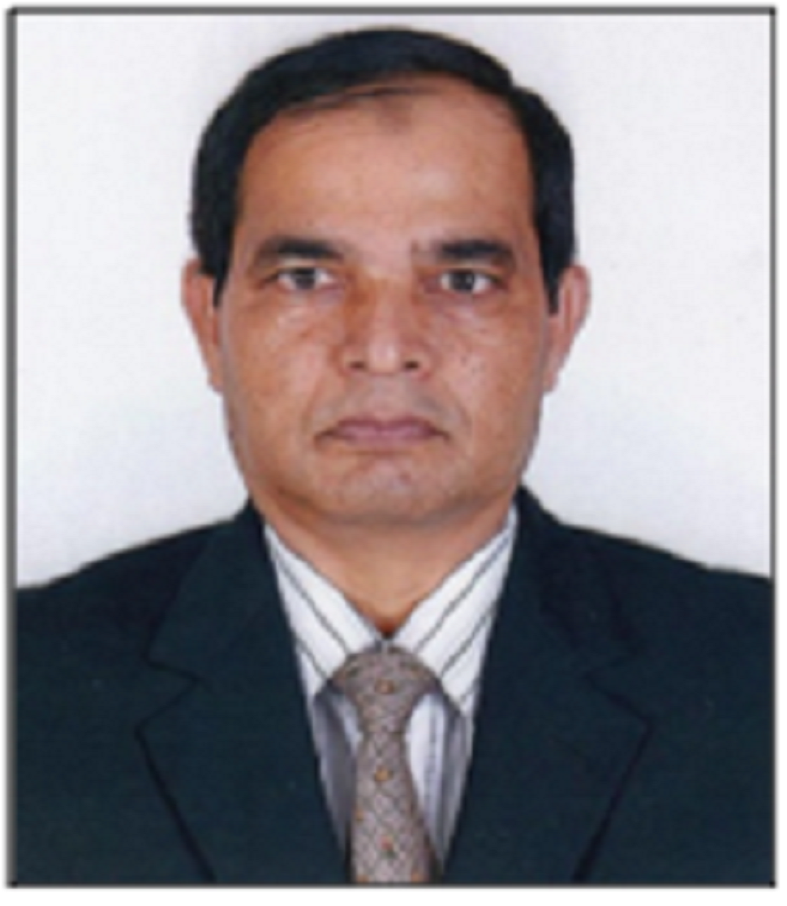

Dr. Mohd Abdur Rashid
Professor and Chairman
Dept. of Electrical & Electronic Engineering
Faculty of Engineering and Technology
Noakhali Science and Technology University (NSTU)
Noakhali-3814, Bangladesh.
Phone: +88-0199827326 (m), E-mail: rashid68@yahoo.com
Scopus ID: 45061264800 Google Scholar ID:Sl5R_iMAAAAJ

Professor and Chairman
Dept. of Electrical & Electronic Engineering
Faculty of Engineering and Technology
Noakhali Science and Technology University (NSTU)
Noakhali-3814, Bangladesh.
Phone: +88-0199827326 (m), E-mail: rashid68@yahoo.com
Scopus ID: 45061264800 Google Scholar ID:Sl5R_iMAAAAJ
FELLOWSHIPS/SCHOLARSHIPS/AWARDS
| • Academic Service Award for the year 2014, UniSZA, Malaysia. | 2015 |
| • Publication Award for the year 2014, UniSZA, Malaysia. | 2015 |
| • JSPS Postdoctoral Fellowship, University of the Ryukyus, Japan. | 2008-2010 |
| • SIAM Conference Travel Award,San Diego, California, U.S.A. | 2001 |
| • Japanese Language Speech Contest Award, Univ. of the Ryukyus, Japan. | 1998 |
| • Japanese Government Scholarship, University of the Ryukyus, Japan. | 1997–2003 |
| • Academic Merit Award, Bangladesh Institute of Technology (BIT), Khulna. | 1989 |
| • National Merit Scholarship, Jessore Education Board, Bangladesh. | 1987–1991 |
AWARDS OF RESEARCH PRODUCTS
□ International Level
• Silver medal
at ITEX 2012, Kuala Lumpur, Malaysia, “Low cost gas alarm systems for security purpose in CNG station”. (As Project leader).
□ University Level
Year 2014:
• Silver medal at UniSZAResearch Exhibition, March 2014, “Microcontroller based inverter with almost zero harmonics” (As Project leader).
Year 2013:
• Bronze medal at UniMAP exhibition, January 2013“Low cost continuous blood pressure measurement and monitoring device” (As Project leader).
• Bronze medal at UniMAP 2013 exhibition, January 2013“Electronic energy meter with remote monitoring and billing system” (As Project leader).
Year 2012:
• Gold medal at UniMAP Research Exhibition, January 2012, “New OCDMA detection scheme for optical access network” (As Co-researcher).
• Gold medal at UniMAP Research Exhibition, January 2012, “New hybrid (OCDMA over WDM) system for optical access network” (As Co-Researcher)
• Silver medal at UniMAP January 2012 exhibition, “Low cost gas alarm systems for security purpose in CNG station” (As Project leader).
• Bronze medal at UniMAP January 2012 exhibition, “Self –dependent hybrid electrical power generation system for single home application” (As Project leader).
• Silver medal at UniSZAResearch Exhibition, March 2014, “Microcontroller based inverter with almost zero harmonics” (As Project leader).
Year 2013:
• Bronze medal at UniMAP exhibition, January 2013“Low cost continuous blood pressure measurement and monitoring device” (As Project leader).
• Bronze medal at UniMAP 2013 exhibition, January 2013“Electronic energy meter with remote monitoring and billing system” (As Project leader).
Year 2012:
• Gold medal at UniMAP Research Exhibition, January 2012, “New OCDMA detection scheme for optical access network” (As Co-researcher).
• Gold medal at UniMAP Research Exhibition, January 2012, “New hybrid (OCDMA over WDM) system for optical access network” (As Co-Researcher)
• Silver medal at UniMAP January 2012 exhibition, “Low cost gas alarm systems for security purpose in CNG station” (As Project leader).
• Bronze medal at UniMAP January 2012 exhibition, “Self –dependent hybrid electrical power generation system for single home application” (As Project leader).